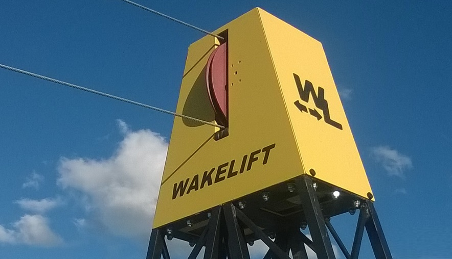
Pohon a elektromechanikaKapotovaná pohonná stanice
Uzavřená kapotovaná stanice s elektromotorem 7,5 kW (380 V), frekvenčním měničem a plynulou regulací.
Výkon motoru: 7,5 kW
Napájení: 380 V / 50 Hz
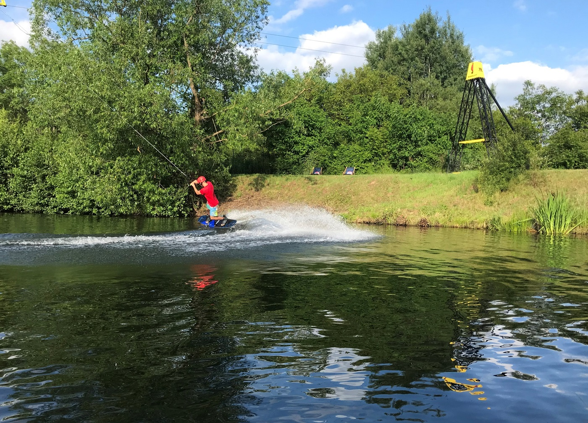
Kompletní konstrukční vývoj, certifikovaná strojírenská výroba a montáž liniových vleků na klíč. Unikátní aerodynamická kapotáž pohonné i vratné stanice, segmentové A-sloupy do 9 metrů a automatické PLC řízení od českého reprezentanta Pavla Trčaly.
Firma WAKELIFT s.r.o. vyvinula dvousloupový systém, který je ideální pro nově budované vodní areály i jako vysoce rentabilní doplněk k existujícím velkým oběžníkovým vlekům.
Oproti klasickému oběžníkovému vleku s trhavým startem umožňuje liniový vlek WAKELIFT plynulý rozběh z nulové rychlosti. Je proto bezkonkurenční pro první krůčky dětí a začínajících jezdců.
Při pádu jezdce obsluha vlek okamžitě zastaví, zvrátí pojezd unašeče a přistaví hrazdu přímo k jezdci na hladině. Není nutné vyčerpávající plavání ke břehu.
Díky nepřerušované jízdě tam a zpět mohou pokročilí jezdci intenzivně trénovat akrobatické prvky, rotace i air triky (Air Raley, Tail Grab, Tantrum) s konstantním tahem lana.
Jako jediný výrobce na trhu dodává WAKELIFT plně zakrytovanou konstrukci, která chrání elektromotor, frekvenční měnič i napínací mechanismus před stříkající vodou i vandaly.
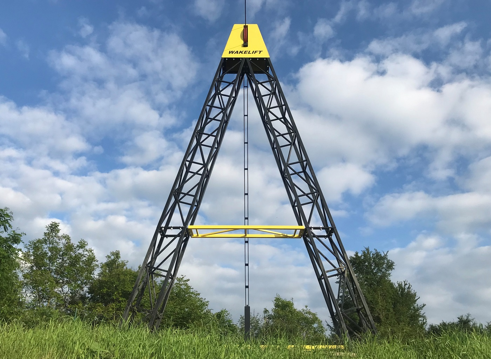
Prohlédněte si detailní konstrukci pohonné stanice, A-sloupů, unašeče a řízení. Kliknutím na kartu otevřete kompletní technickou specifikaci.
6 komponent vleků v přehledu

Pohon a elektromechanikaUzavřená kapotovaná stanice s elektromotorem 7,5 kW (380 V), frekvenčním měničem a plynulou regulací.
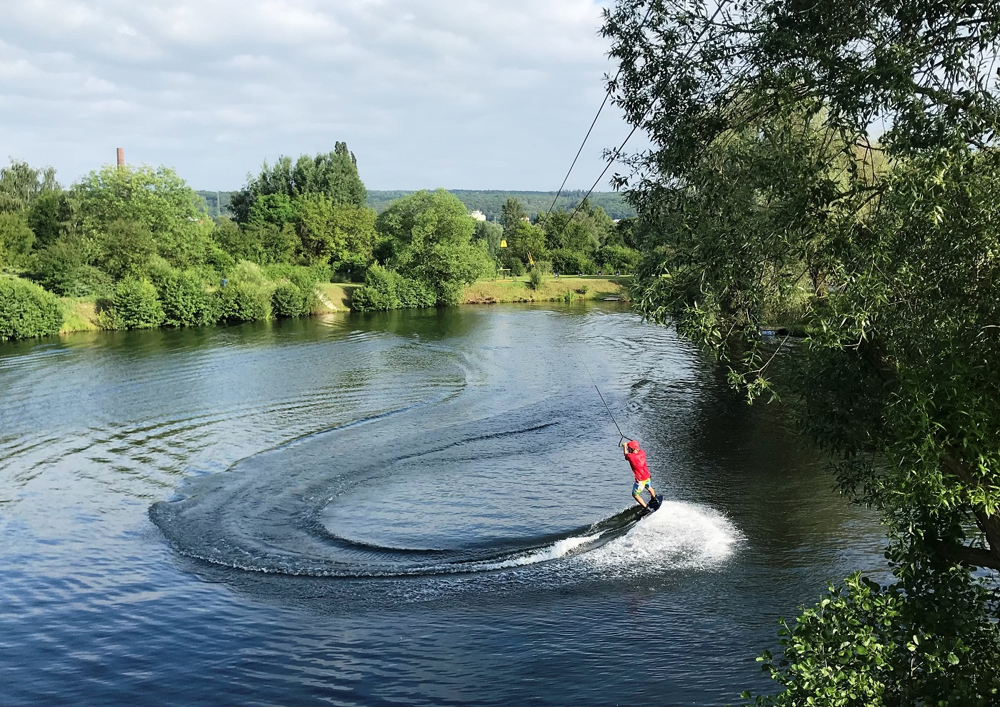
Mechanika a napínáníVratná stanice s možností pevného kotvení v základní výbavě nebo napínání protizávažím pro delší tratě.
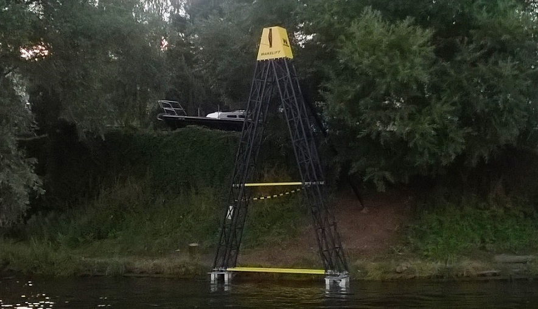
Nosná konstrukceModulární sloupy výšky 3 až 9 metrů v dílech po 2 a 3 metrech, umožňující ruční transport a montáž.
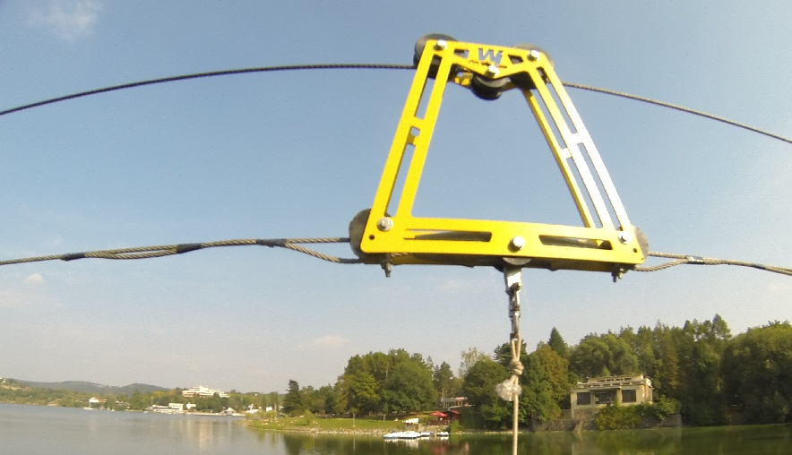
Bezpečnost a monitoringBezpečný pojezdový unašeč s elektronickými i mechanickými koncovými dorazy a dálkovým monitoringem.
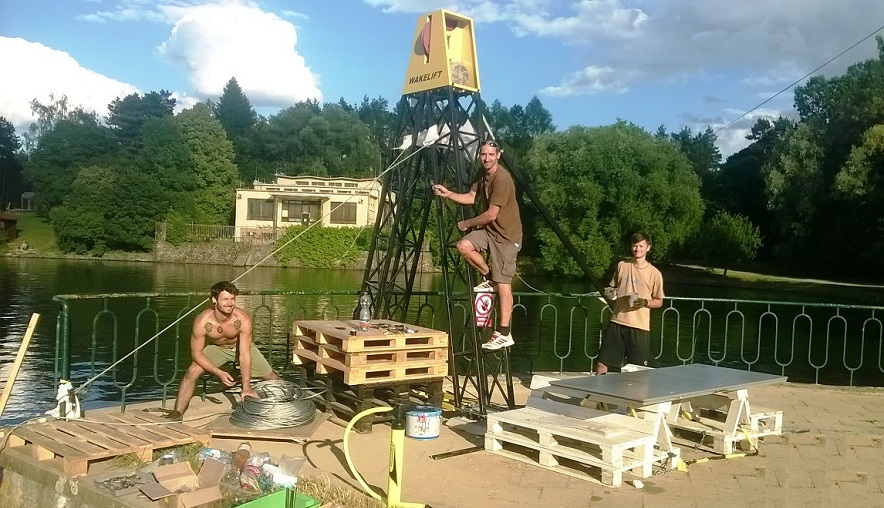
Řízení a softwareFlexibilní přepínání mezi plně automatickou reverzací pro plynulou jízdu a manuálním módem pro trénink triků.
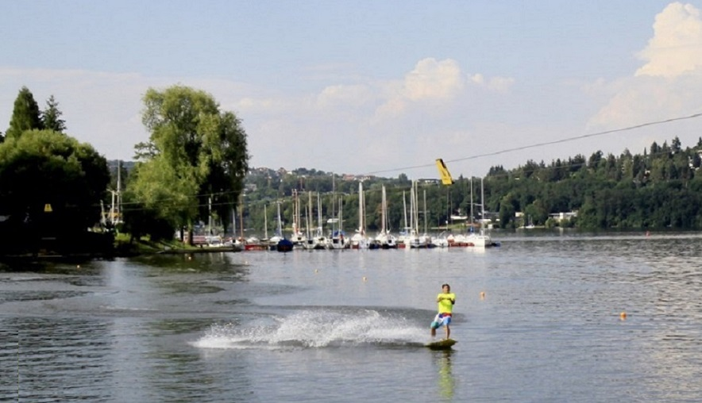
Lana a základySpeciální tažné lano 8 mm nebo 9 mm a flexibilní kotvení do betonových základů nebo prefabrikovaných panelů.
Od sportovního reprezentanta k vlastnímu strojírenskému vývoji a patentovaným vlekům.
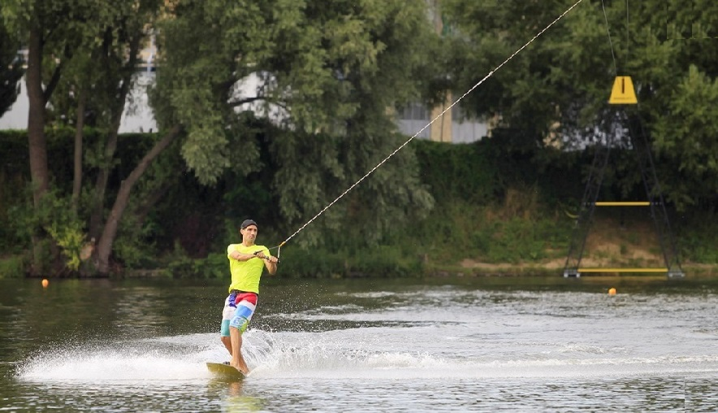
Značka WAKELIFT vznikla v Brně z iniciativy Pavla Trčaly, který propojil desítky let zkušeností z mezinárodních závodů ve vodním lyžování a wakeboardingu s českým strojírenským umem. Běžně dostupné zahraniční vleky trpěly nechráněnou mechanikou, složitou montáží a vysokými provozními nároky.
WAKELIFT přišel s radikální inovací: plně kapotovanou pohonnou i vratnou stanicí, stavebnicovými A-sloupy a plynulou reverzací, kterou lze obsluhovat bez složitého školení. Každý vlek je navržen tak, aby obstál v náročném celoročním venkovním prostředí.
Zahájení vývoje prvního moravského dvousloupového vleku pro vodní lyžování a wakeboarding. Cílem bylo vytvořit lehkou, rozebíratelnou konstrukci pro české i zahraniční vodní plochy.
Uvedení aerodynamických krytů z odolného laminátu chránících motor 7,5 kW a mechaniku před deštěm a stříkající vodou. Segmenty sloupů 2 a 3 metry umožnily ruční transport běžným autem.
Implementace pokročilého počítačového systému umožňujícího přepínat mezi nepřetržitou automatickou reverzací pro sportovce a manuálním módem pro výuku začátečníků.
Vyvinutí systému kotvení do prefabrikovaných betonových panelů a závaží pro instalace v chráněných krajinných oblastech bez nutnosti betonáže na břehu.
WAKELIFT dodává kompletní instalace na klíč, certifikované dle norem ČSN EN 1993, včetně zaškolení obsluhy, záručního servisu a dodávek náhradních dílů po celé ČR i na Slovensku.
Představení dvousloupového systému na vodní nádrži. Sledujte plynulý rozjezd, rychlost až 40 km/h, stabilitu A-sloupů a hladký průjezd unašeče při akrobatických skocích.
Ověřené parametry z výrobní dokumentace brněnského závodu. Všechny nosné díly splňují přísné normy bezpečnosti ocelových konstrukcí.
Reálné záběry ze staveb, montáží a provozu vleků WAKELIFT na vodních nádržích v České republice.
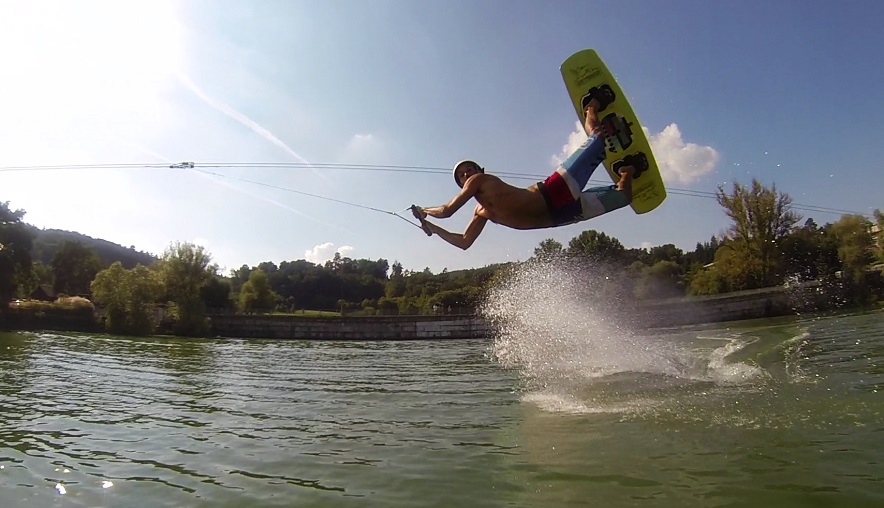
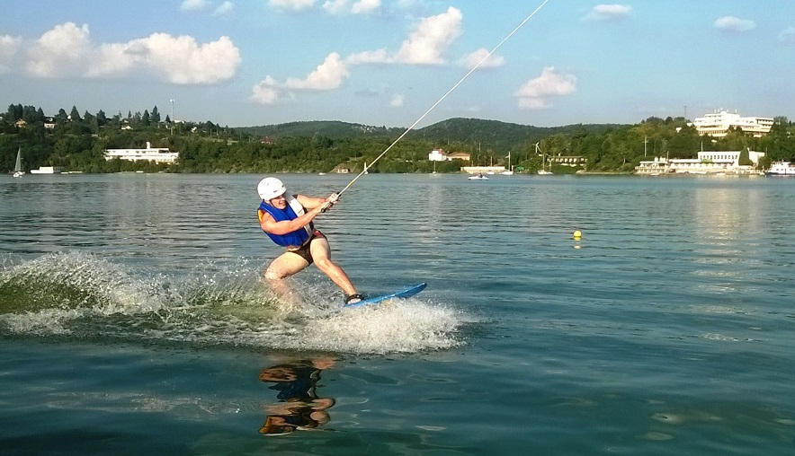
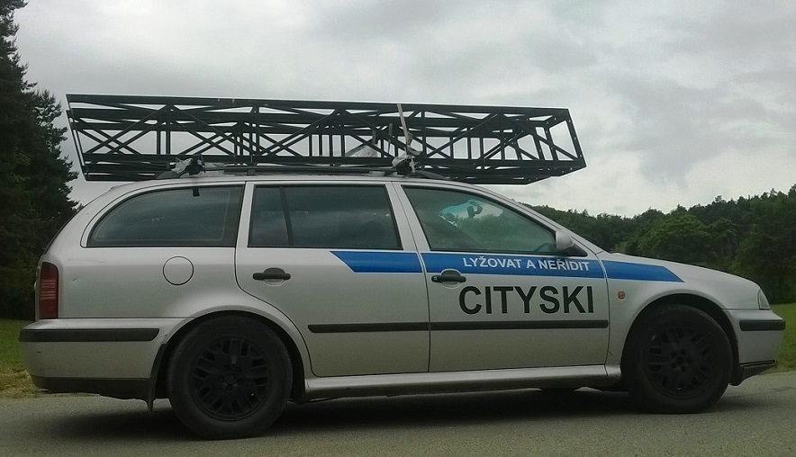
Spojte se přímo s konstruktérem a zakladatelem firmy pro posouzení vaší vodní plochy a technický návrh na míru.
WAKELIFT s.r.o.
Veveří 464/17, Veveří
602 00 Brno
Česká republika
Vyplňte základní údaje a my se vám ozveme zpět s technickou konzultací a návrhem řešení.